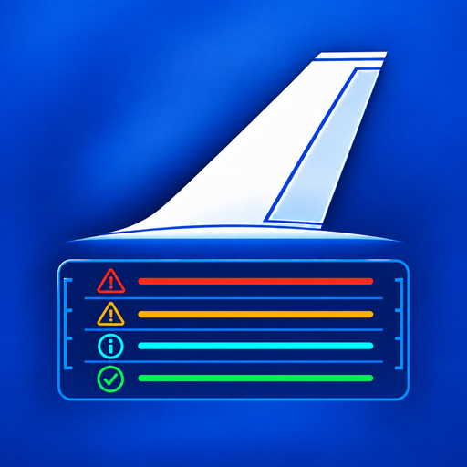
EICAS Ref
Your manuals, cross-referenced
Everything your own manuals say about an EICAS message, on one page: the QRH checklist, MEL dispatch conditions, CDL items, PI-QRH performance and the FCOM system description. Cross-referenced and offline on iPad, iPhone and Mac.
iPad · iPhone · Mac
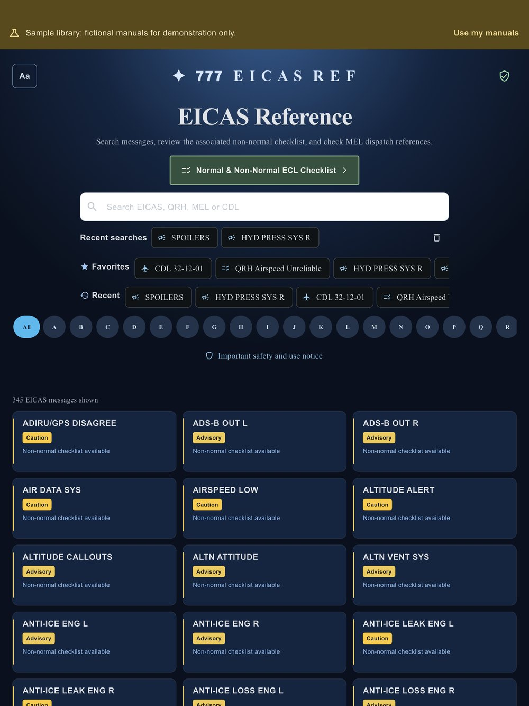
Every EICAS message, one search
Search by EICAS message, MEL or CDL number, or checklist title. Favourites and recent searches stay one tap away.
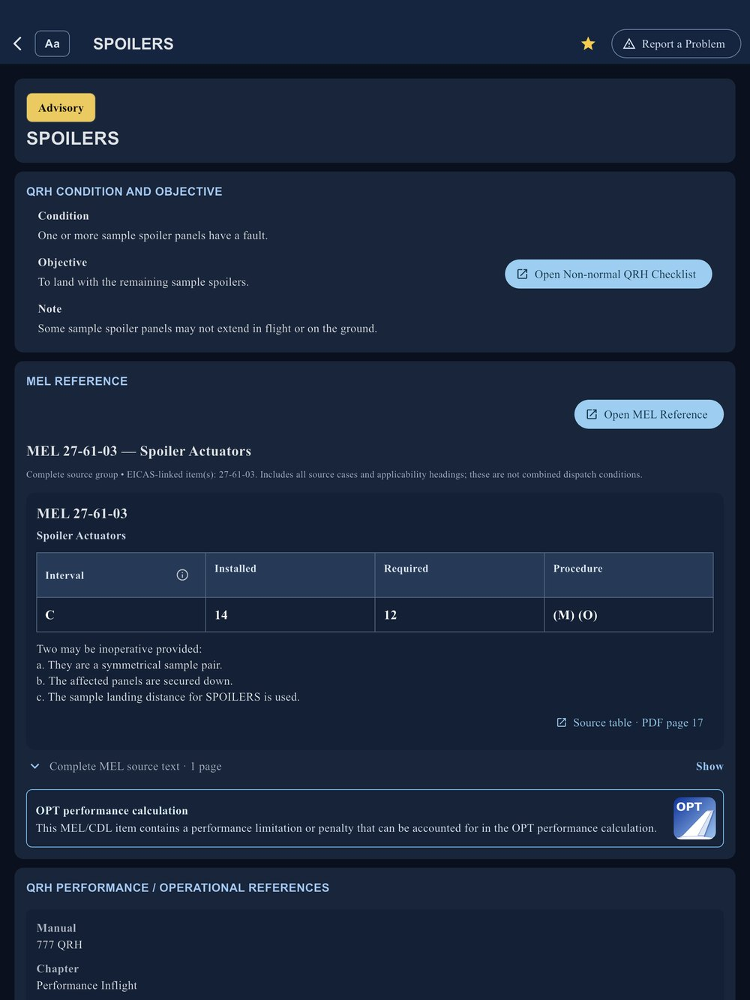
Each message with its QRH and MEL
Condition, objective, notes, cautions and warnings from your QRH, with the linked MEL items and their dispatch conditions on the same page.
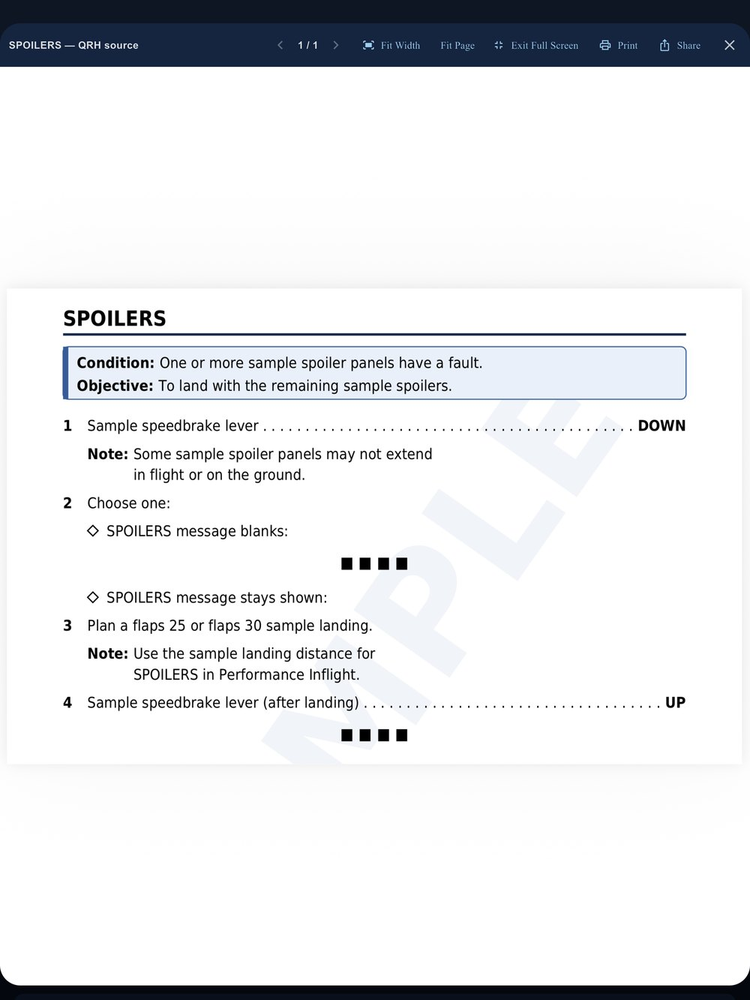
The non-normal checklist from your own QRH
Open the checklist straight from the message. It is cut from your QRH from its heading to its end marker, across every page it runs to.
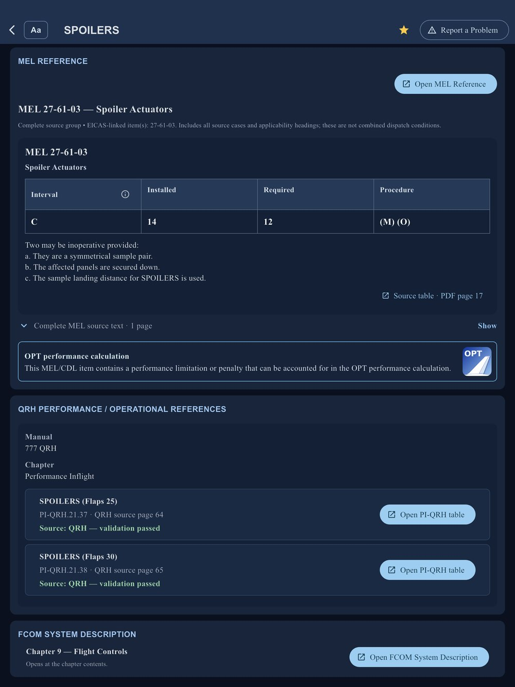
Performance and FCOM, linked to the message
PI-QRH tables and the FCOM system description chapter, one tap from the message. MEL and CDL items with a performance penalty, requirement or restriction are flagged: they may have to be included in the OPT performance calculation.
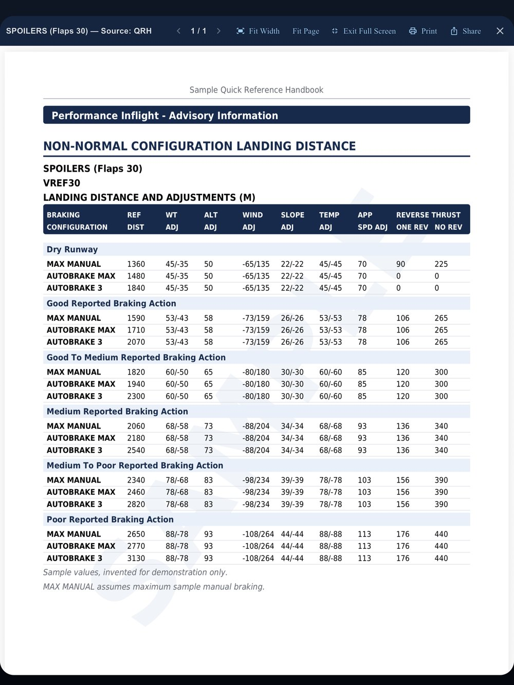
Non-normal landing distance, one tap away
The Performance Inflight landing distance tables for the configuration, read from your QRH.
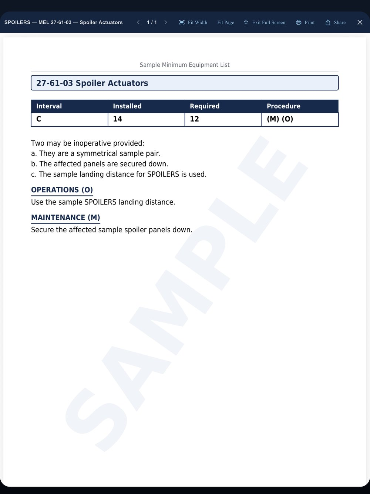
The complete MEL item
Repair interval, number installed and required, and the (M) and (O) procedures, with the item's own pages from your MEL.
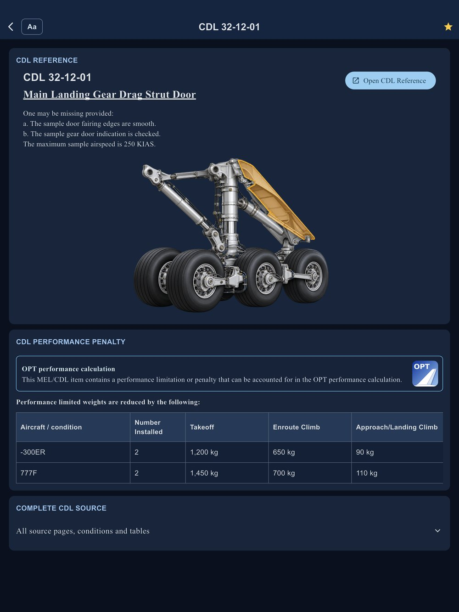
CDL items with their performance penalties
The CDL item with its conditions and performance penalties by model, and the item's pages from your CDL or DDG.
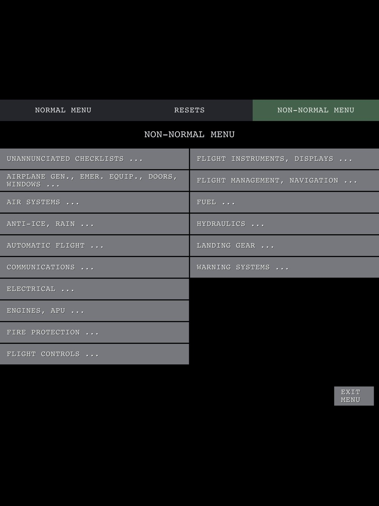
Familiar ECL-style menus
Normal and non-normal checklists by system, in the layout you know from the flight deck.
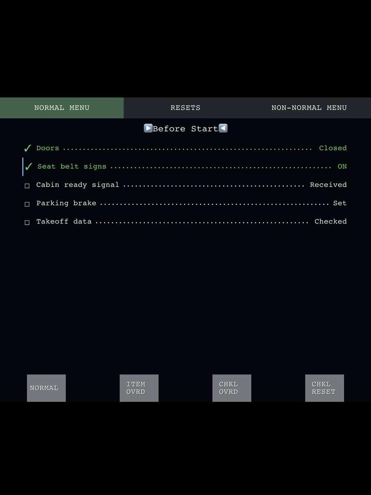
Interactive normal checklists
The normal checklists from your QRH, item by item.
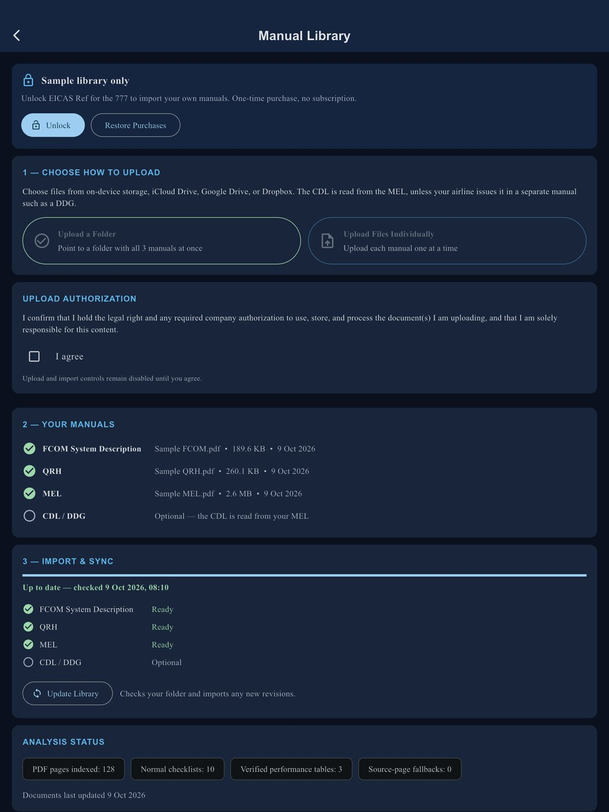
Your manuals. Your device.
Import your own FCOM, QRH, MEL and CDL / DDG from a folder or single files. They are processed on your device, never uploaded or shared, and the app works offline. A free sample library lets you try everything first; unlock once to use your own manuals.
Getting started
Try the free sample library first. To use your own manuals, unlock the app once, then choose the folder that holds your FCOM, QRH and MEL (and the CDL / DDG if your operator keeps it separately), and tap Update Library. Your manuals are processed on your device and never uploaded.
New revision
Put the new file in the same folder (or choose it on the Library page) and tap Update Library.
Restore Purchases
On a new device or after reinstalling, open the Library page and tap Restore Purchases, signed in with the same Apple Account.
Contact
Questions, problems or ideas: EicasRef@gmail.com. In the app, “Report a problem” on an EICAS message fills in the app version and message for you. Thank you for every report: it makes the app better for every pilot.
Important
EICAS Ref is an independent study and reference tool. It is not an approved operational document, and it is not affiliated with or endorsed by Boeing or any airline. Always use your company's current approved manuals.
Screens show the fictional sample library.